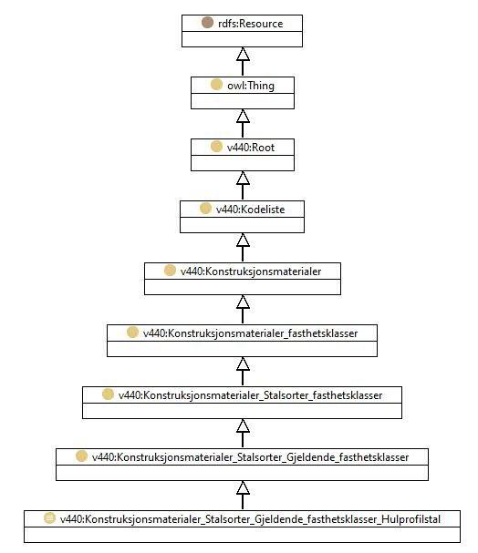

https://ontologi.atlas.vegvesen.no/v440/core/v440-owl#Konstruksjonsmaterialer_Stalsorter_Gjeldende_fasthetsklasser_Hulprofilstal
Class v440:Konstruksjonsmaterialer_Stalsorter_Gjeldende_fasthetsklasser_Hulprofilstal

rdf:type
owl:Class
rdfs:label
Hulprofilstål i henhold til EN 10210-1 (1994)
Hollow core steel, according to EN 10210-1 (1994)
rdfs:subClassOf
v440:Konstruksjonsmaterialer_Stalsorter_Gjeldende_fasthetsklasser
owl:oneOf
[
v440:Konstruksjonsmaterialer_Stalsorter_Gjeldende_fasthetsklasser_Hulprofilstal_kvalitet_S355J2H
,
v440:Konstruksjonsmaterialer_Stalsorter_Gjeldende_fasthetsklasser_Hulprofilstal_kvalitet_S355NLH
,
v440:Konstruksjonsmaterialer_Stalsorter_Gjeldende_fasthetsklasser_Hulprofilstal_kvalitet_S355NH
,
v440:Konstruksjonsmaterialer_Stalsorter_Gjeldende_fasthetsklasser_Hulprofilstal_kvalitet_S460NLH
,
v440:Konstruksjonsmaterialer_Stalsorter_Gjeldende_fasthetsklasser_Hulprofilstal_kvalitet_Annet
,
v440:Konstruksjonsmaterialer_Stalsorter_Gjeldende_fasthetsklasser_Hulprofilstal_kvalitet_S275J2H
,
v440:Konstruksjonsmaterialer_Stalsorter_Gjeldende_fasthetsklasser_Hulprofilstal_kvalitet_S460NH
]
v440:avsnitt
V-8.6
v440:kapittel
V-8
v440:kode
70
Instances
v440:Konstruksjonsmaterialer_Stalsorter_Gjeldende_fasthetsklasser_Hulprofilstal_kvalitet_Annet
,
v440:Konstruksjonsmaterialer_Stalsorter_Gjeldende_fasthetsklasser_Hulprofilstal_kvalitet_S275J2H
,
v440:Konstruksjonsmaterialer_Stalsorter_Gjeldende_fasthetsklasser_Hulprofilstal_kvalitet_S355J2H
,
v440:Konstruksjonsmaterialer_Stalsorter_Gjeldende_fasthetsklasser_Hulprofilstal_kvalitet_S355NH
,
v440:Konstruksjonsmaterialer_Stalsorter_Gjeldende_fasthetsklasser_Hulprofilstal_kvalitet_S355NLH
,
v440:Konstruksjonsmaterialer_Stalsorter_Gjeldende_fasthetsklasser_Hulprofilstal_kvalitet_S460NH
,
v440:Konstruksjonsmaterialer_Stalsorter_Gjeldende_fasthetsklasser_Hulprofilstal_kvalitet_S460NLH
References
as owl:disjointUnionOf (
v440:Konstruksjonsmaterialer_Stalsorter_Gjeldende_fasthetsklasser
)
Generated with
TopBraid Composer
by
TopQuadrant, Inc.